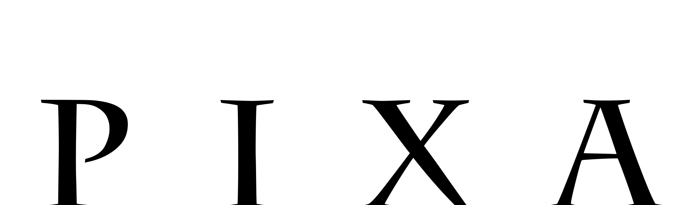

실사 영화는 수백 번 NG를 내고 한 테이크를 건집니다. 그런데 3D 애니메이션은 다릅니다. 애니메이터가 프레임 하나하나를 그립니다 — 실수가 원천적으로 없습니다. 완벽이 기본 상태입니다.
픽사는 1998년 《A Bug's Life》의 엔딩 크레딧에 가짜 블루퍼(NG)를 넣었습니다. 개미가 대사를 까먹고 웃고, 무당벌레가 넘어지고, 조명이 깨집니다. 전부 — 프레임 단위로 설계된 "실수"였습니다.

Pixar · 1998부터의 전통